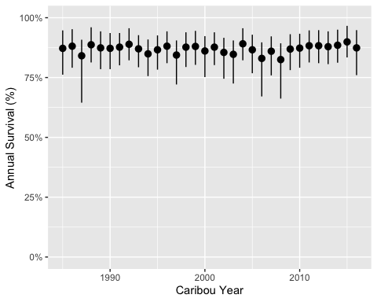

bboutools is an R package to estimate the annual survival, recruitment and population growth for boreal caribou populations using Bayesian and Maximum Likelihood models with fixed and random effects. It was developed to facilitate direct comparison of estimates across jurisdictions.
Installation
To install the latest development version:
# install.packages("remotes")
remotes::install_github("poissonconsulting/bboutools")Introduction
Survival
bboutools accepts survival data for a single population in a specific format.
library(tibble) # for printing data frames
library(ggplot2) # for plotting
library(bboudata) # for boreal caribou datasets
#>
#> Attaching package: 'bboudata'
#> The following object is masked from 'package:bboutools':
#>
#> licensing_md
library(bboutools)
surv_data <- bboudata::bbousurv_a
head(surv_data)
#> # A tibble: 6 × 6
#> PopulationName Year Month StartTotal MortalitiesCertain MortalitiesUncertain
#> <chr> <int> <int> <int> <int> <int>
#> 1 A 1986 1 0 0 0
#> 2 A 1986 2 8 0 0
#> 3 A 1986 3 8 0 0
#> 4 A 1986 4 8 0 0
#> 5 A 1986 5 8 0 0
#> 6 A 1986 6 8 0 0The survival model, which includes a random effect of month, is fitted using bb_fit_survival(). To achieve convergence increase nthin.
set.seed(99)
surv_fit <- bb_fit_survival(surv_data, quiet = TRUE)
glance(surv_fit)
#> # A tibble: 1 × 8
#> n K nchains niters nthin ess rhat converged
#> <int> <int> <int> <int> <dbl> <int> <dbl> <lgl>
#> 1 363 5 3 1000 10 111 1.03 TRUEPredictions can then be generated using bb_predict_survival().
surv_pred <- bb_predict_survival(surv_fit)
surv_pred
#> # A tibble: 32 × 6
#> PopulationName CaribouYear Month estimate lower upper
#> <chr> <int> <int> <dbl> <dbl> <dbl>
#> 1 A 1985 NA 0.872 0.762 0.947
#> 2 A 1986 NA 0.881 0.791 0.952
#> 3 A 1987 NA 0.841 0.645 0.908
#> 4 A 1988 NA 0.887 0.813 0.96
#> 5 A 1989 NA 0.874 0.785 0.943
#> 6 A 1990 NA 0.872 0.785 0.936
#> 7 A 1991 NA 0.877 0.801 0.936
#> 8 A 1992 NA 0.889 0.822 0.956
#> 9 A 1993 NA 0.87 0.793 0.927
#> 10 A 1994 NA 0.849 0.756 0.909
#> # ℹ 22 more rowsAnd plotted using bb_plot_year()
bb_plot_year_survival(surv_pred) +
expand_limits(y = c(0, 1))
The survival in each month can be plotted using bb_plot_month()
bb_plot_month_survival(surv_fit)
These estimates represent the annual survival rate if that month lasted the whole year.
Recruitment
The equivalent functions for recruitment data are
recruit_data <- bboudata::bbourecruit_a
head(recruit_data)
#> # A tibble: 6 × 9
#> PopulationName Year Month Day Cows Bulls UnknownAdults Yearlings Calves
#> <chr> <int> <int> <int> <int> <int> <int> <int> <int>
#> 1 A 1990 3 9 1 1 0 0 0
#> 2 A 1990 3 9 5 1 0 0 0
#> 3 A 1990 3 9 4 1 0 0 0
#> 4 A 1990 3 9 2 0 0 0 0
#> 5 A 1990 3 9 6 0 0 0 0
#> 6 A 1990 3 9 4 1 0 0 0
set.seed(99)
recruit_fit <- bb_fit_recruitment(recruit_data, quiet = TRUE)
bb_plot_year_recruitment(recruit_fit)
Population Growth
The function bb_predict_growth() predicts the annual population growth (lambda) rate from the survival and recruitment models.
lambda <- bb_predict_growth(surv_fit, recruit_fit)
bb_plot_year_growth(lambda)bb_predict_population_change() calculates the population change (%) with uncertainty as the cumulative product of population growth.
change <- bb_predict_population_change(surv_fit, recruit_fit)
bb_plot_year_population_change(change)Information
Additional information is available from the bboutools website, which includes the following articles:
- Get Started.
- Analytic Methods for Estimation of Boreal Caribou Survival, Recruitment and Population Growth.
- Prior Selection and Influence.
There is also a user-friendly graphical interface, called bboushiny, for non-R users.
Code of Conduct
Please note that the bboutools project is released with a Contributor Code of Conduct. By contributing to this project, you agree to abide by its terms.
Licensing
Copyright 2022-2023 Environment and Climate Change Canada
Copyright 2024 Province of Alberta
The documentation is released under the CC BY 4.0 License
The code is released under the Apache License 2.0